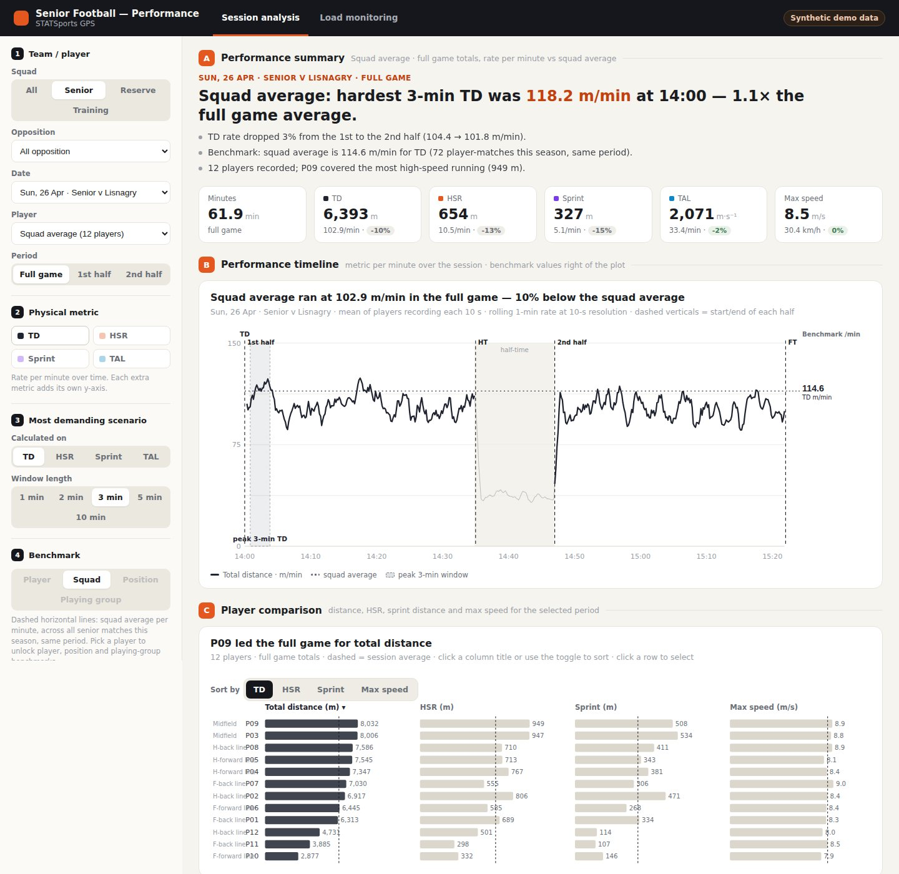
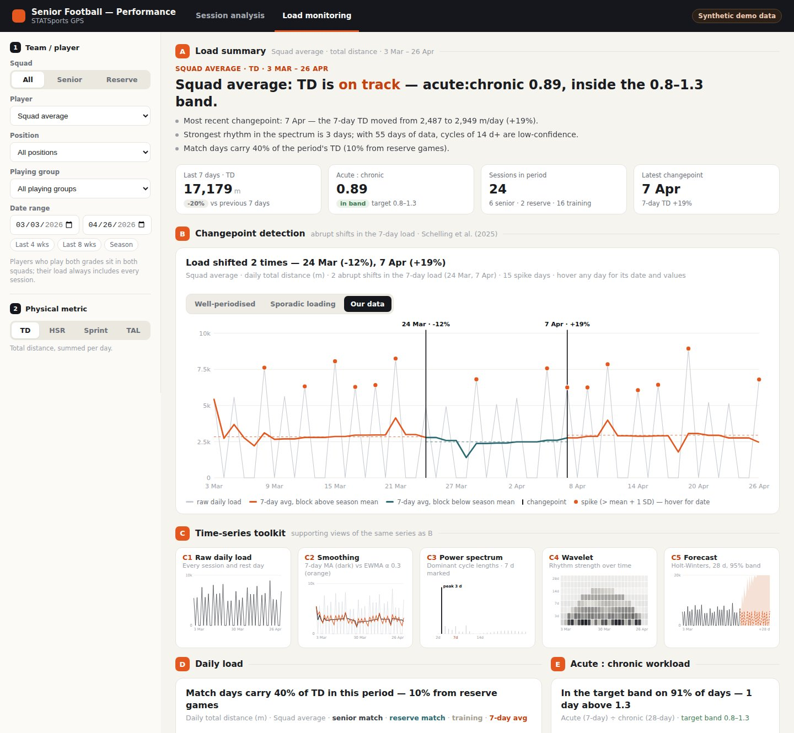

GPS Performance Dashboard: Session Analysis & Load Monitoring
An end-to-end pipeline that turns raw 10 Hz STATSports exports into a pseudonymised, browser-based dashboard for Gaelic football: per-minute match demands, most demanding scenarios, acute:chronic workload and changepoint detection on the training rhythm.
1. Overview & Motivation
Most GPS reporting in team sport stops at session totals: distance, high-speed running, sprint distance, top speed. Those numbers are useful, but they flatten two things coaches actually ask about. The first is when the hardest passages of a game happen and whether training prepares players for them. The second is whether the week-to-week training rhythm is doing what the plan says it should.
This project builds on my GPS processing pipeline for Gaelic games and takes it a step further: from summary tables in Tableau to a self-contained dashboard that works at 10-second resolution within a session and treats the season's load as a time series. The structure follows the five-stage decision-support framework of Schelling & Robertson [1], and the time-series toolkit mirrors the methods reviewed by Schelling et al. [2], adapted to the demands of Gaelic football.
The same numbers that feed an injury-risk report can answer a performance question: are we training players to the worst-case demands of the game, and are our best players peaking on the days that matter? The dashboard is framed around that second question.
2. Live Demo & Screenshots
The public demo runs on an invented squad (see section 5), so every filter and chart can be explored without exposing any real athlete data. Open the live demo.
2.1 Session Analysis
One match or training session at 10-second resolution. Filters cover squad (senior, reserve, training), opposition, date, player and period (full game, either half, or an individual training drill). The page shows per-minute distance, high-speed running, sprint distance and total acceleration load; the most demanding scenario for each metric over 1 to 10-minute windows; a sortable player comparison; and benchmarks against the season average for the player, squad, position line or playing group.

2.2 Load Monitoring
The season view. A changepoint panel marks abrupt shifts in the 7-day load, alongside a toolkit of supporting views on the same series: raw daily load, smoothing, power spectrum, wavelet scalogram and a short-term forecast. Daily load and acute:chronic workload sit underneath, split by senior match, reserve match and training days.

3. Pipeline Architecture
Each stage is a small, separately testable module. Raw exports are read exactly once; everything downstream is derived from a cache, so a rerun after a new session takes seconds rather than minutes.
Collect
Lazy Polars scan of each 10 Hz export into a 10 s bin cache
Condition
Velocity from position, smoothing, artefact removal
Features
Session totals, per-minute distance, ACWR
Patterns
MDS windows, wavelet & spectrum, changepoints
Output
Pseudonymised JS payloads for the dashboard
Two details in the collect stage matter more than they look. STATSports exports every drill twice, once under its own title and again inside "Entire Session", so only the Entire Session rows count towards load and the drill rows are used purely for their time windows (halves, drills). And because each raw file is scanned with projection and predicate pushdown (only the seven columns needed, filtered before loading), a first pass over a season of about 11 GB takes a few minutes, and later runs only read files that are new or have changed.
4. Metrics & Methods
| Metric | Definition | Notes |
|---|---|---|
| Total distance (TD) | Metres covered, from STATSports filtered speed at 10 Hz | Also shown per minute on the field, so players with different minutes compare fairly |
| High-speed running | Distance above 5.5 m/s (19.8 km/h) | Includes sprint distance |
| Sprint distance | Distance above 7.0 m/s (25.2 km/h) | Readings above 10.5 m/s are treated as GPS artefacts |
| Total acceleration load (TAL) | Σ|Δv| between consecutive 10 Hz samples [2] | Never bridges dropouts longer than 0.25 s; captures stop-start work that distance misses |
| Most demanding scenario (MDS) | Highest rolling 1, 2, 3, 4, 5 or 10-minute window, per minute | Never counted across half-time |
| Acute:chronic workload | Rolling 7-day ÷ 28-day mean load | First 21 days shown as a baseline-building period |
4.1 Why 1 to 10-minute windows
The changepoint-based MDS analysis in Schelling et al. [2] was built for basketball, where a 12-second window matches a possession. Gaelic football is played on a far larger pitch with longer passages of play, so the duration-specific windows here run from one minute upwards. That gives coaches a worst-case target per window length that can be set directly against conditioning drills of the same duration.
4.2 Treating load as a time series
The load page treats daily load as a signal rather than a list of numbers. A 7-day moving average and an exponentially weighted average (α = 0.3) show the trend; a periodogram and a Morlet continuous wavelet transform show which cycle lengths dominate and whether the weekly rhythm is stable across the season; an additive Holt-Winters model projects 28 days ahead with a 95% band.
The headline panel is changepoint detection on the 7-day load, using PELT via the
ruptures library with a NumPy binary-segmentation fallback. It answers a question
coaches rarely get a clean answer to: when did the load structurally shift, and by how
much? Each break is labelled with its date and the percentage change in the 7-day mean.
5. Synthetic Sample Data
Real athlete data cannot be published, so the repository ships a generator that writes a fake squad in the exact STATSports export format and runs it through the unmodified pipeline. That way the public demo exercises every stage end to end rather than a mock-up.
The generator invents a 14-player squad across five position lines over eight weeks, with two training sessions and a match each week, a three-build, one-deload block, fictional fixtures and occasional substitutions. Speed follows a mean-reverting baseline with superimposed high-speed efforts, scaled by position line. It targets plausible magnitudes (about 100 to 110 m/min in matches) rather than modelling real players.
6. Data Privacy & Secure Sharing
Governance is built into the pipeline rather than left to the user:
Pseudonymisation. Players become P01, P02 and so on before anything reaches the output folder or the browser. The name key stays in a local, git-ignored cache.
Nothing sensitive in version control. Raw exports, caches, squad reference files and all CSVs are excluded by default.
Encrypted sharing. For real data, the publish step inlines each page into a single file and encrypts it with AES-256-GCM, with the key derived from a password via PBKDF2-SHA256 (600,000 iterations). The hosted page contains only ciphertext and decrypts in the viewer's browser, so a dashboard can be shared by link without the data ever being readable on the server.
The unencrypted demo build refuses to run unless the pipeline is pointed at the synthetic sample data, so a real dataset can't be published in the clear by accident.
7. Quick Start
# Install dependencies
pip install -r requirements.txt
# Generate the synthetic squad (~1 GB, git-ignored)
python scripts/make_sample_data.py
# Run the pipeline, then open the dashboard straight from disk
python run.py
open dashboard/index.html
To use real exports, point data.root in config.yaml at a folder of
STATSports CSVs named YYYY-MM-DD-<Team>-<Match|Training>.csv. Optional
squad context (fixtures, grades, position lines) is joined from small reference CSVs.
8. Limitations & Considerations
Acute:chronic workload is contested. The ratio is widely used but its statistical properties and its link to injury are debated. It is presented here as one descriptive view of load alongside the time-series methods, not as a risk score.
Window lengths and changepoint penalties need calibrating. The defaults are sensible starting points for Gaelic football, but the minimum segment length and penalty should be tuned against a squad's own match data.
Device-specific values. Metrics come from STATSports' filtered speed channel, so absolute values depend on the device's own processing and aren't directly comparable across manufacturers.
Descriptive before predictive. The forecasting panel is a short-term projection of the load series. There is deliberately no injury-prediction model; simpler, interpretable views tend to hold up better in practice than opaque ones.
9. References
- Schelling, X. & Robertson, S. (2020). A development framework for decision support systems in high-performance sport. International Journal of Computer Science in Sport, 19(1), 1–23. doi:10.2478/ijcss-2020-0001
- Schelling, X. et al. (2025). Decision Support Systems for Time Series in Sport: Literature Review and Applied Example of Changepoint-Based Most Demanding Scenario Analysis in Basketball. Applied Sciences, 15(19), 10575. doi:10.3390/app151910575